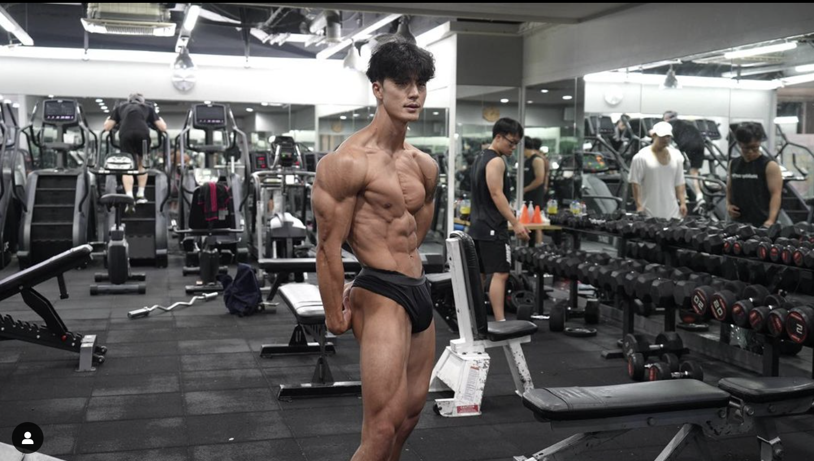
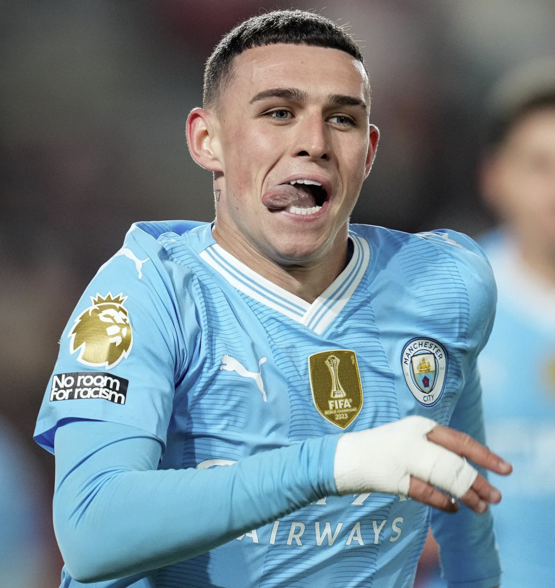

제가 가장 이상적이라고 생각하는 운동법과 몸 프레임 마음가짐 등등 헬스인으로써 롤모델 말왕입니다. 저는 헬스를 시작한건 오래되었지만 부상과 재수라는 공백기때문에 제대로 시작한지는 몇개월 되지 않았습니다. 언젠가는 이상적인 몸을 만드리라 생각합니다.

제가 가장 좋아하는 축구선수 맨체스터시티 소속 필 포든입니다. 제 포지션과 같고 축구를 쉽고 빠르게 합니다. 저는 스타일은 다르지만 필 포든처럼 하기 위해 항상 고민하고 경기에서 적용하기위해 노력합니다. 가끔 필 포든과 같은 플레이를 하면 가슴이 벅차오를 때가 있습니다.